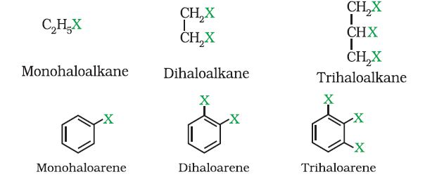
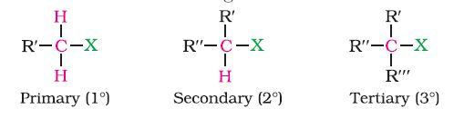
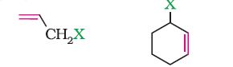
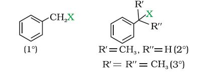
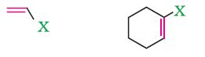
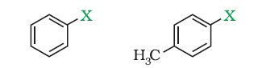

Halogenated compounds persist in the environment due to their resistance to breakdown by soil bacteria.
The replacement of hydrogen atom(s) in a hydrocarbon, aliphatic or aromatic, by halogen atom(s) results in the formation of alkyl halide (haloalkane) and aryl halide (haloarene), respectively. Haloalkanes contain halogen atom(s) attached to the sp3 hybridised carbon atom of an alkyl group whereas haloarenes contain halogen atom(s) attached to sp2 hybridised carbon atom(s) of an aryl group. Many halogen containing organic compounds occur in nature and some of these are clinically useful. These classes of compounds find wide applications in industry as well as in day-to-day life. They are used as solvents for relatively non-polar compounds and as starting materials for the synthesis of wide range of organic compounds. Chlorine containing antibiotic, chloramphenicol, produced by soil microorganisms is very effective for the treatment of typhoid fever. Our body produces iodine containing hormone, thyroxine, the deficiency of which causes a disease called goiter. Synthetic halogen compounds, viz. chloroquine is used for the treatment of malaria; halothane is used as an anaesthetic during surgery.
Certain fully fluorinated compounds are being considered as potential blood substitutes in surgery. In this Unit, you will study the important methods of preparation, physical and chemical properties and uses of organohalogen compounds.
Haloalkanes and haloarenes may be classified as follows:
These may be classified as mono, di, or polyhalogen (tri-,tetra-, etc.) compounds depending on whether they contain one, two or more halogen atoms in their structures. For example,

Monohalocompounds may further be classified according to the hybridisation of the carbon atom to which the halogen is bonded, as discussed below.
(a) Alkyl halides or haloalkanes (R—X)
In alkyl halides, the halogen atom is bonded to an alkyl group (R). They form a homologous series represented by CnH2n+1X. They are further classified as primary, secondary or tertiary according to the nature of carbon to which halogen is attached.

(b) Allylic halides
These are the compounds in which the halogen atom is bonded to an sp3-hybridised carbon atom next to carbon-carbon double bond (C=C) i.e. to an allylic carbon.

(c) Benzylic halides
These are the compounds in which the halogen atom is bonded to an sp3-hybridised carbon atom next to an aromatic ring.

This class includes:
(a) Vinylic halides
These are the compounds in which the halogen atom is bonded to an sp2-hybridised carbon atom of a carbon-carbon double bond (C = C).

(b) Aryl halides
These are the compounds in which the halogen atom is bonded to the sp2-hybridised carbon atom of an aromatic ring.
